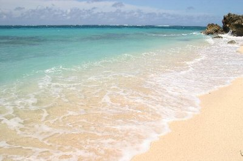
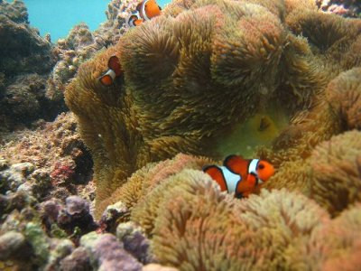
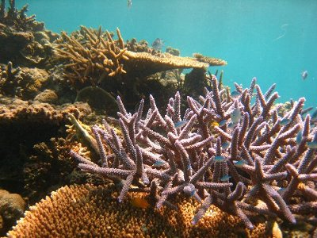
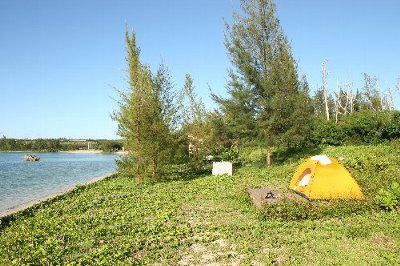
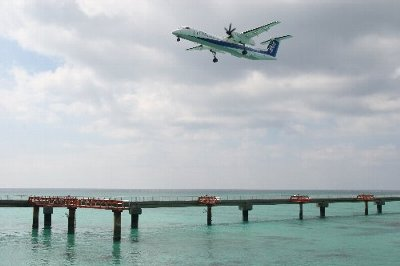

今年は宮古島へ！ | 2010年9月 |
|---|---|
| 私の一人離島巡りも今年で4年目になりました。毎度のことになってきましたが、今年も行く直前に台風通過しましたが、行けば良い天気でした。 宮古島は、もうちょとで石垣島って所で、那覇から飛行機で45分位。宮古島と池間島、来間島は橋でつながっていて、車で行くことが出来ます。数年後には伊良部島とも橋で繋がるそうです。ちなみに、伊良部島と下地島はとても近くて、一つの島のように見えます。橋が掛っていて、歩いても車でも渡れます。 今回は、この５島の各シュノーケルポイントを巡って来ました。泊まりは、ゲストハウス一泊、テント三泊、民宿一泊です。 ≪シュノーケル≫ 宮古の海は綺麗な碧をしてます。真っ白な砂地の浜で、コバルトブルーと言うかエメラルドグリーンと言うかキラキラと輝いている感じです。見るだけでも感動しますよ。 どこに行っても綺麗な海とサンゴ、魚を見ることが出来ます。 （池間島北の海岸） 池間島の北側には、ガイドブックとか載っていないけど、小さな浜がいくつか点在します。まさにプライベートビーチ。碧い海で泳げることに感動です。サンゴや魚も多くて、最高のシュノーケルポイントです。ただ、店やトイレ、シャワーは有りません。看板もないので、探すのに苦労するかもしれません。人も少ないので、（というか、ほぼ居ない）のんびり過ごすことも可能です。私も一日いました。 （宮古島、新城（あらぐすく）海岸） 有名なシュノーケルポイントで、サンゴと魚一杯です。無料のシャワーとトイレがあり、お店もあるので、ご飯には苦労しません。レンタルショップもあるから、シュノーケルセットとかも貸りれます。無料休憩所あり。 遠浅のため、干潮時にはサンゴの隙間を縫って泳ぐことになります。でも浅い。子ども連れには良いかもね。 | |
|  綺麗な海でしょう〜 |  まさしくプライベートビーチ！独り占めです！ 「LOST」みたい |
| （来間島、長間浜海岸） トイレ、シャワー、店なし。だけど、綺麗な砂浜と碧い海は最高です！ テーブルサンゴが沢山。ここ、一日居たかった。 （伊良部島、白崎展望台近くの海岸） ここも、あまりガイドブックには載ってないかな。小さな浜辺があって、海が綺麗だしサンゴも魚も一杯です。この沖合がダイビングポイントです。 当然、シャワー、トイレありませんが、佐和田の浜まで車で１０分位。そこまで行けばトイレもシャワーも有ります。 （下地島、中の島海岸） 有名なシュノーケルポイントです。ですがシャワー、トイレ有りません。人も多いです。 海岸から左手奥の方が、ストンって深くなっていて、ダイビング気分味わえます。もちろんサンゴ、魚も豊富です。 | |
|  ココでもカクレクマノミ〜 色んなクマノミ居ます！ |  珊瑚も沢山で綺麗 |
| ≪ダイビング≫ 今回お世話になったのは、伊良部マリンズブロ宮古さんです。船は小さいけど、少人数制で私の時も、私入れて二人。（単に客が居なかっただけかもしれないが）インストラクター二人で、もうマンツーマンでした。もう一人が500本潜っているベテランなので、分けてもらえて良かった。ベテランさんの足引っ張るのも嫌だったし。 久しぶりのダイビングだったので不安でしたが、その旨を話したら、とても親切に機材のセッティングから教えてくれました。いや〜、ここに決めて良かった。 大人数だと、周りの人に追われちゃうというか、のんびりしてると怒られそうな感じですよね。ちょっとピリピリ感が有るっていうか。聞きたいことも聞けないし、細やかな対応なんて無理だから。同じポイントで、デカイ船で大人数で来ているところもあったけど、そちらより良いと思った。テント場まで送迎してくれたし、食事処とかも教えてもらったしね。 ランチの色どりソーメンも美味しかった♪ | |
 岩に擬態したオコゼ？かな |  ダイビングポイントのクロスホール 穴の上から光が差し込んでます |
| （ダイビング：伊良部北№１５） （ダイビング：伊良部 クロスホール） 海底の横穴に侵入すると、その先に上から差し込む光が見えます。カッコいい！こんな所来たかった！その上部に開いた穴が、ちょうど十字架のようにクロスしているので、その名がついたようです。出るときはその穴を上昇していきます。 （ダイビング：伊良部 白崎幼稚園） 幼魚が沢山いるから、幼稚園って名がついたみたいです。確かに、小さな魚が沢山。 | |
 モンハナシャコ。食べられるかな？ |  伊良部島のフナウサギバナタ展望台から下を覗く ココに貝殻アクセサリー売りのおじさんに話を聞くと良いよ |
| ≪宿泊≫ 観光地である宮古は、宿も豊富ですから自分のスタイルで宿泊すれば良いかと思います。 私が今回泊まったゲストハウスは、「ゲストハウスヒダマリ」です。結構古くからやっているようですが、綺麗に掃除もされていて、町中にあるので何かと便利。素泊まり2000円（平成22年9月現在。以下同じ）は、懐にもやさしいね。 大人数は泊まれないようなので、アットホーム的で良いですね。私も色々な人と話をして、どこかの大学生に似顔絵まで書いてもらいました。連泊したかった。（満室で一泊しか取れなかった） 結果、今回もテント三泊しましたが、一泊目のパイナガマビーチは、テント張れるって書いてあるけど、やめた方が良いでしょう。トイレもシャワーも完備、コンビニも近いけど、町中に近すぎて夜中でも若者が騒ぎに来ます。落ち着きません。ロケーションもよろしくない。 結局二泊した、伊良部島の佐和田の浜は最高です！ 周りに人家も少ないが、食事出来るところも、ちょっと歩けばスーパーもあるし、トイレ・シャワー有ります。目の前の海岸は、とても静かで日没と月没が（下地島越しですが）見ることが出来ます。下地島に離着陸の訓練をしている飛行機も見れます。月が沈むと星が綺麗で、蛍まで飛んでました。（9月なのに！） 地元の人にも話しかけられます。（ここで、地元飲み会に誘われました） | |
|  伊良部島でのキャンプ地 |  キャンプ地からの月入り。ヨコの赤いのは航空標識 ホントはもっと綺麗な色なんだけどな〜 |
| 最後の一泊は、農家民宿「津嘉山荘」です。 郷土料理とおばちゃんが有名で１泊２食（5250円）という安さなのに、食事の量と種類が半端ないです。しかも、美味しいの♪ 有る程度自分達で作った野菜を使って、見たこともないような郷土料理が出てきます。千代ちゃんというおばちゃんがメインでやっているけど、食事に力を注いでいて、食べる時間に合わせて全てを作っているそうで、食事時間厳守です。（夕食18時、朝食7時半）決して威張っているとか横柄な態度とかではなく、美味しいものを美味しく食べてもらいたいこだわりで、冷めても再加熱とかしないんだそうです。これは皇室関係者でも貫き通したとか・・・ そんな有名な所とは知らずに行ったのですが、SMAPのキムタクも宿泊したことが有るそうです。漫画「クッキングパパ」第111巻にも出てきて、作者の色紙が有りました。 おばちゃん面白いし、ご飯美味しいし、宿泊者同士で話したりして、連泊したい場所です。 ホテル並みに綺麗なところではないけれど、掃除は行き届いて快適です。夕食の写真撮り忘れたのがイタイ。 | |
|  下地島と言えば、民間航空機の練習場 凄く近くで見ることが出来ますよ |  宮古島での宿ならココ「津嘉山荘」 |
| ≪その他≫ ちょっと上でも書きましたが、テントに帰ったら近くで宴会していた地元の飲み会に誘われ、そのままおウチ飲み会に行ってきました。ちょうど中秋の名月で、伊良部では中秋の名月の時に、グループでおウチ飲み会やるんだって。参加したグループも、すでに20数年続いているとか。 宮古名物「おとーり」や、ゲームなどをしました。（負けると飲むの） 凄い楽しかった。旅先でのこういう経験って大切ですよね。 宮古島、伊良部島も意外と大きい島なので、レンタカーやレンタルバイクを借りた方が良いでしょう。バスも有りますが、時間や行きたいところと微妙に離れているのがつらいところです。アップダウンも多いしね。暑い中歩くのもつらい。 伊良部島でお世話になったのが「サンレンタカー」さんです。港に有るので便利です。親切なおじさんが対応してくれます。 宮古島でもいくつかお店は有りますが、私が借りたのが「B-shop」さんです。名前からするとかっこいい感じですが、地元のバイク屋って感じで、感じの良いおじさんがいます。 そのおじさん曰く、バイクは夏場はかなりキツイみたいです。日に焼けまくりで、それなりの対策をしないと痛い目にあうようですよ。私が行った時は、風が心地よく快適にツーリング出来ました。 同じ宿に宿泊していた人が言っていましたが、「宮古は地球のへそ」なんだそうです。魔の三角地帯バミューダートライアングルの反対が宮古なんだそうです。とっても神聖な大神島も近くにあるし、宮古島にも名前忘れちゃったけど、彫った石が並んでいるパワースポットがあるとか。 津嘉山荘では、ご先祖様にお金を渡す儀式を拝見しました。一年に一回、ご先祖様があの世でお金に困らないように、紙のお金を燃やして届けるんだとか。紙のお金はスーパーでも売っているそうで、わら半紙の様な紙に銭形平次の投げ銭の様な刻印が打ってあるんです。それがお札の束のように留めてあり、一枚一枚燃やします。 宮古は色々な意味で魅力的な島でした。また行きたい。泳いでないけど、凄い綺麗な場所有るんです。教えてもらったんだけど時間なくて。伊良部で一緒に飲んだ人とも、また会いたいしね。 | |
| 写真＆コメント by べっしー | |